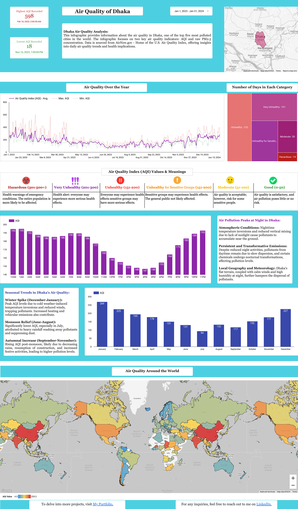

<div class="container">
                <div class="row mh-portfolio-modal-inner">
                    <div class="col-10 offset-1">
                        <h2>Air Quality of Dhaka</h2>
                        <p>📊 Explore my latest dashboard for an in-depth analysis of Dhaka's air quality, currently
                            holding the rank as the most polluted city in the globe 🌏.
                            Historically recognized as one of the most pollution-burdened cities, Dhaka confronts severe
                            environmental hurdles. This detailed analysis brings to
                            light the severity of the circumstances, with a startling peak AQI of 598 in 2023 😷.
                            <br><br>Here are some key takeaways from the data: <br><br>

                            ▶ The dashboard tracks the AQI from 2020 to the present, highlighting times when air quality
                            reached to 'Very Unhealthy' and 'Hazardous' levels 🔴.<br>
                            ▶ Dhaka endured 133 'Unhealthy' days, a distressing 82 'Very Unhealthy' days, 18 'Hazardous'
                            days, and notably, not a single 'Good' air quality day 🚫🌿, emphasizing the persistent air
                            quality crisis.<br>
                            ▶ A seasonal breakdown shows a winter surge in pollutants and a monsoon phase that offers a
                            brief window of cleaner air🌦️.<br>
                            ▶ The data also sheds light on nighttime pollution peaks, influenced by specific atmospheric
                            conditions and continuous emissions. 🌃💨.<br><br>

                            Comparing Dhaka's AQI on a global scale underscores the critical need for immediate action.
                        </p>
                        <div class="mh-about-tag">
                            <ul>
                                <li><span>Google BigQuery</span></li>
                                <li><span>SQL</span></li>
                                <li><span>Looker Studio</span></li>
                            </ul>
                        </div>
                        <a href="https://lookerstudio.google.com/u/1/reporting/1aa64e74-1e84-4f68-bd7b-bbf93ef0b528/page/p_0hmr9sxmdd"
                            target="_blank" rel="noopener noreferrer" class="btn btn-fill">Source: Looker Studio <span class="icon-external-link" aria-hidden="true"></span></a>
                        <br><br>
                    </div>
                    <div class="col-10 offset-1">
                        <div class="mh-portfolio-modal-img">
                            
                        </div>
                    </div>
                </div>
            </div>
